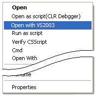
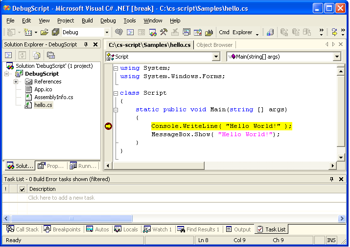

Microsoft Visual Studio 2003 (v7.1) is a native IDE for .NET 1.1. It provides one of the most advanced IDE for C# development. It is not a free tool (see Microsoft home page for details).
Open script in Visual Studio by using shell extension:

After being activating by the user, 'shell extension' creates temporary Visual Studio project, which includes all necessary source files and libraries and opens it with the new instance of Visual Studio. You can work now with this project as with any other VS project. After closing the project all temporary files are cleared.
This is the screenshot of the debugging "Hello World!" sample (hello.cs file).

If "shell extension" detects that the project has to be changed (eg. the code requires new assemblies to be added) it updates a new version of the project file. Thus, Visual Studio can prompt you to reload the project.
Debugging tutorial | Script Library